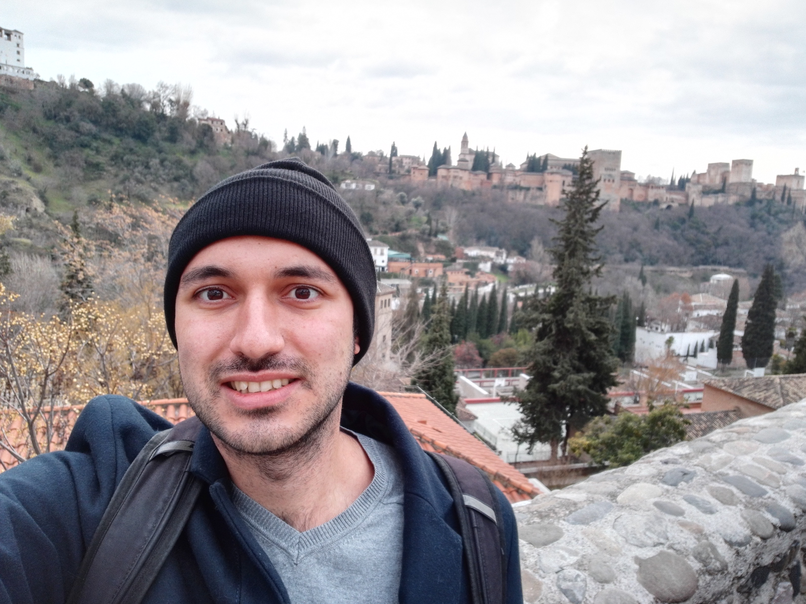

Matias Perkins

EXPERIENCIA LABORAL
- 2017 | Actualidad - Mentor Tecnico, Aprender Programando
- 2016 - Pasante Instituto Pastoral, Pontificia Universidad Catolica Argentina (UCA)
- 2016 - Ayudante de catedra, Pontificia Universidad Católica Argentina (UCA). Materia: Electrotecnia. Profesor: Raúl Villar.
- 2015 - Ayudante de catedra, Pontificia Universidad Católica Argentina (UCA). Materia: Representación Gráfica. Profesora: Graciela Mallo.
COMPUTACION
- Conocimiento en lenguaje: C | Visual C# | Visual Basic | HTML | CSS | JavaScript
- Microsoft Office
OTROS INTERESES
- 2015 - Desarrollo de aplicación base de datos para noche de la caridad. (No implementada)
- 2015 - Coordinación de retiros espirituales, “Interuca” perteneciente a la Pastoral de la UCA.
- 2015 | Actualidad - Colaboración con el Centro de Estudiantes, Facultad de Ingeniería de la Pontificia Universidad Católica Argentina (UCA).
- 2014 | 2016 - Coordinación del grupo “Noche de la Caridad”, Parroquia Santa Elena.
- 2014 - Curso de capacitación Atención de Personas en Situación de Calle. Dictados por Lumencor.
- 2014 | Actualidad - Colaboración en diversas actividades pertenecientes a la Pastoral de la UCA.
- 2006 | 2009 - Participación en el Programa Uniendo Metas, Modelo de Naciones Unidas, Fundación Conciencia.